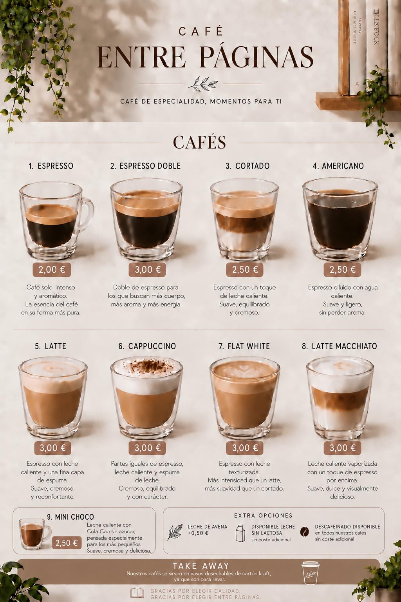
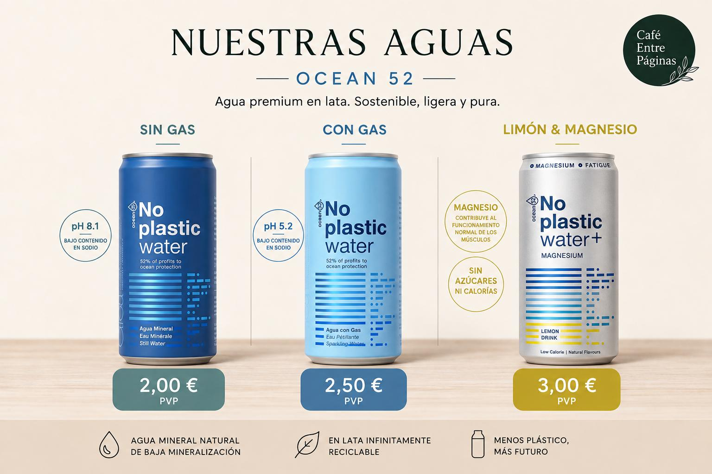
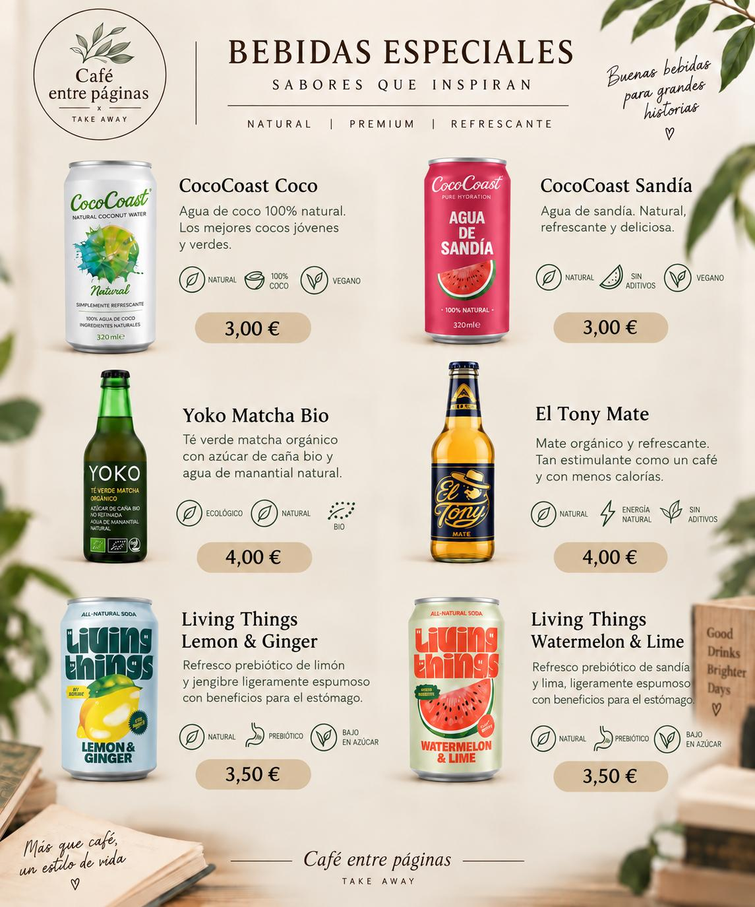
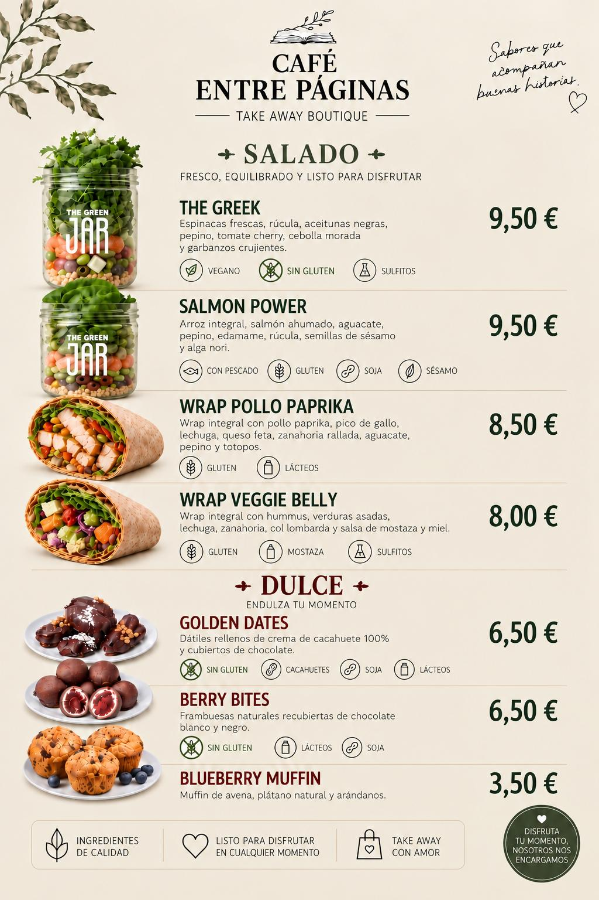
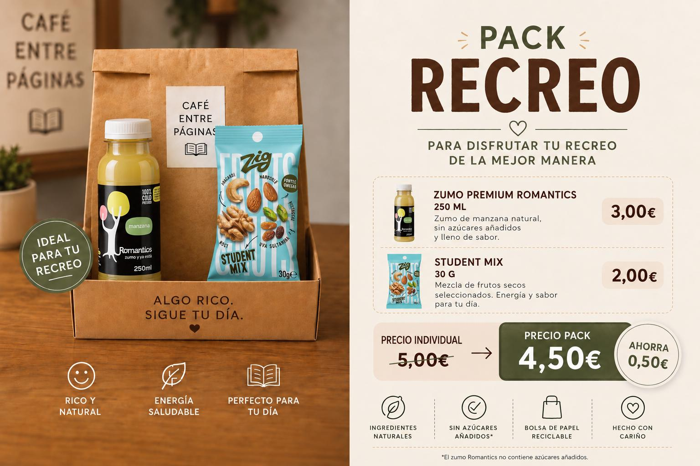
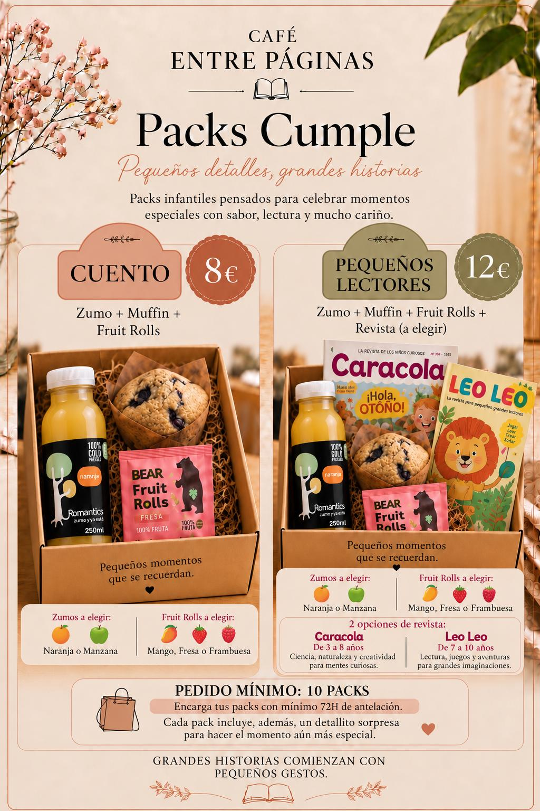
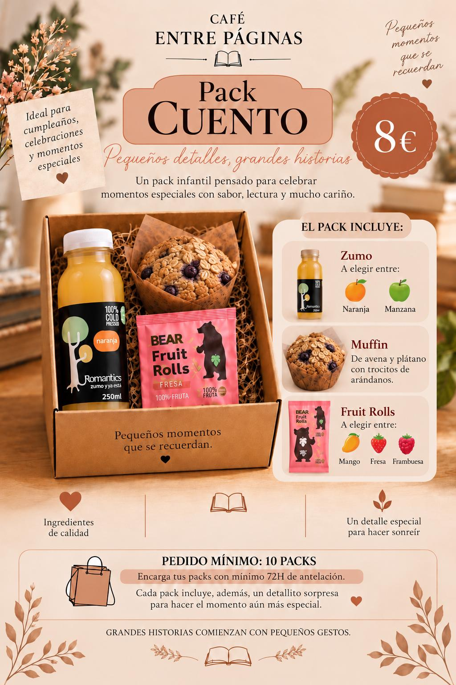
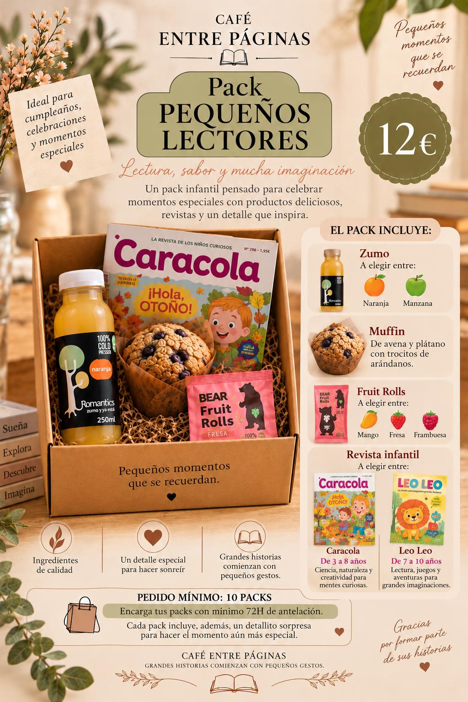
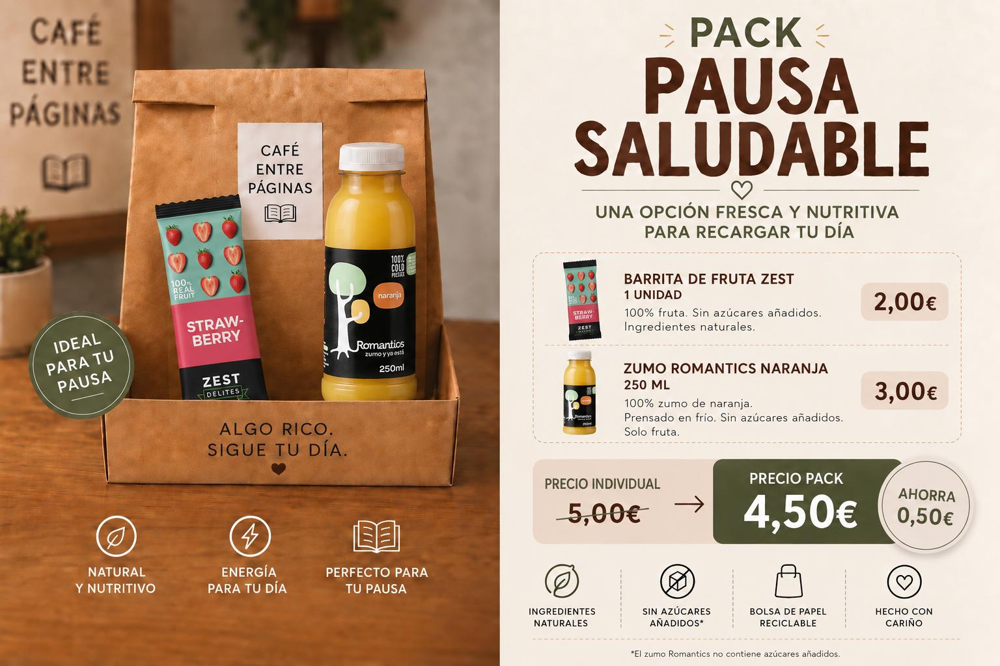

Para disfrutar al momento
Café de especialidad
Cafés preparados con cuidado para acompañar cada capítulo de tu día.
Alcobendas · Próxima apertura
Porque algunas de las mejores conversaciones empiezan con un café, y algunos de los mejores viajes empiezan entre páginas.
Nuestra selección
Una selección cuidada de café, bebidas, snacks y detalles. La carta completa y los pedidos para recoger estarán disponibles próximamente.

Para disfrutar al momento
Cafés preparados con cuidado para acompañar cada capítulo de tu día.

Ligero, natural, diferente
Agua mineral natural y opciones con gas, en lata y sin plástico.

Natural · Premium · Refrescante
Opciones frescas y diferentes para acompañar cualquier momento.

Fresco, equilibrado y listo
Ensaladas y wraps preparados para disfrutar de una pausa completa.

Pequeños placeres
Opciones naturales para seguir tu día con energía.

Para regalar una pausa
Pequeños detalles pensados para celebrar momentos especiales.

Pequeños lectores
Zumo + Muffin + Fruit Rolls.

Lectura, sabor y mucha imaginación
Zumo + Muffin + Fruit Rolls + Revista.

Ideal para tu pausa
Una opción fresca y nutritiva para recargar tu día.

Nuestra historia
Café Entre Páginas nace de dos cosas que han sido muy importantes en mi vida: el café y la lectura.
Siempre he sentido que el café tiene una forma especial de unir a las personas. Cuántas conversaciones empiezan con un simple «¿nos tomamos un café?». A veces es la excusa perfecta para reencontrarnos con alguien a quien hace tiempo que no vemos, para compartir una buena noticia, celebrar algo, hablar de aquello que nos preocupa o, simplemente, disfrutar de un rato juntos.
Para mí, el café es mucho más que una bebida. Es encuentro, conversación y conexión.
Y después están los libros.
La lectura ha ocupado un lugar muy especial en mi vida. Me ha acompañado en momentos buenos, pero sobre todo ha sido un refugio en etapas más difíciles. Entre páginas he encontrado historias que me han permitido desconectar, palabras que me han ayudado a crecer y libros que me han inspirado a creer más en mí y a mirar las cosas desde otra perspectiva.
Leer me ha permitido viajar sin moverme, descubrir ideas maravillosas y encontrar pequeños momentos de calma cuando más los necesitaba.
De ahí nace Café Entre Páginas: de unir esos dos pequeños grandes placeres.
Un buen café que nos conecta con los demás y unas páginas que, a veces, nos ayudan a reconectar con nosotros mismos.
Quiero que Café Entre Páginas sea precisamente eso: un pequeño espacio donde llevarte algo más que un café. Un momento, una historia, una inspiración o simplemente una pausa bonita en medio del día.
“Porque algunas de las mejores conversaciones empiezan con un café, y algunos de los mejores viajes empiezan entre páginas.”
Próxima apertura
Estamos preparando cada detalle. Síguenos para conocer la fecha de apertura y las novedades de la carta.
Lunes a viernes · 08:00–14:00 y 17:00–19:00
Sábados y domingos · 09:30–13:30